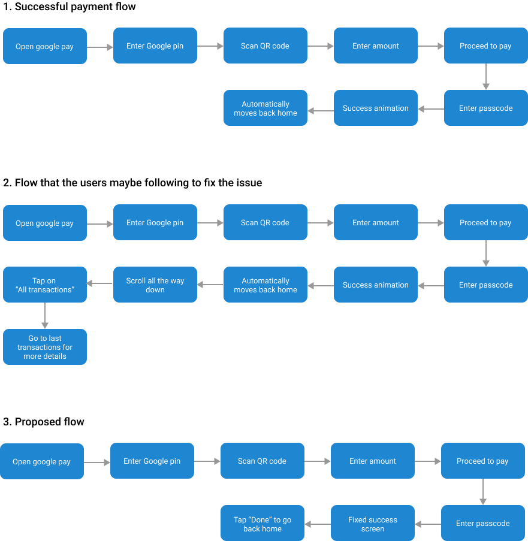

When users are doing P2P payments, the success status stays for about 2 seconds. If the merchant is busy tending to his other customers, users miss the 2-second window there is and have to navigate down to All Transactions.
My goal with user flows was to draw out the existing "work-around" users are doing. Later user flows are guiding light for building wireframes and UI in next steps.
Typically users look for a rectangle or a magnifying glass icon placed on the upper left or right corner of the page. Presence of a label saying “search” or a placeholder and/or a magnifying glass icon makes locating it easier and more intuitive
My thoughts:
My thoughts:
The pros of both the card and popup design involve mentioning the payment details right after a payment is done. Both the designs, to an extent, add an additional step of going into “All transactions” to check the payment information in detail.
My thoughts:
My thoughts:
Showing the payment details upfront and across the entire screen makes the payment experience a lot easier for the user. Hence, both the third and fourth design is a good solution to the problem. One of the ways of measuring success would be observing changes in user journey in sessions where users pay and go into transaction history. There should be a drop in this user journey.